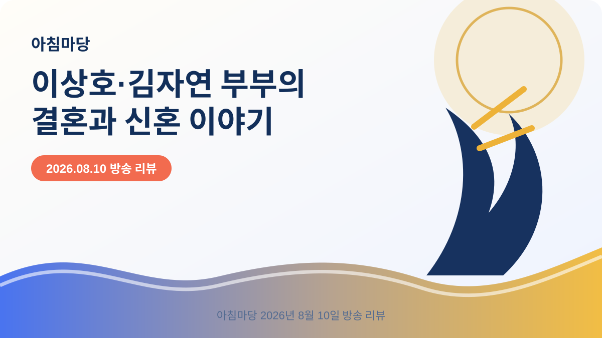

아침마당 · 2026-08-10
아침마당 이상호·김자연 부부의 결혼 이야기와 신혼 생활｜8월 10일 방송 요약

이번 아침마당에서는 개그맨 이상호와 아내 김자연이 출연해 헬스장에서 시작된 만남과 결혼 후의 일상을 소개했습니다.
두 사람은 결혼 3년 차 부부로서 서로를 바라보는 현실적인 대화와 쌍둥이 형제와 떨어져 살게 된 변화도 함께 전했습니다.
이상호·김자연 부부가 전한 3년 차 결혼 생활
방송 초반 이상호는 자신을 쌍둥이 개그맨 중 동생보다 잘생긴 형이라고 소개하며 웃음을 만들었습니다. 김자연도 자신의 이름을 밝히며 부부로서 함께 인사를 나눴습니다.
두 사람은 결혼한 지 3년이 됐다고 밝혔습니다. 이상호는 3년 차면 서로를 알 만큼 알게 되는 시기라고 농담했지만, 김자연은 볼 때마다 새롭고 여전히 행복하다고 말하며 두 사람의 분위기를 전했습니다.
쌍둥이 형제와 떨어져 지내며 생긴 변화
이상호는 결혼 후 쌍둥이 동생 이상민과 떨어져 살고 있지만, 동생이 걱정되면서도 현재의 결혼 생활은 행복하다고 설명했습니다. 자리에 늘 함께 있던 사람이 보이지 않아 허전할 수 있다는 이야기도 이어졌습니다.
다만 형제는 멀리 떨어진 것이 아니라 차로 약 5분 거리에 살고 있다고 했습니다. 함께 지방 스케줄을 다니고 고깃집도 운영하고 있어 생활 속에서는 여전히 자주 만난다는 점을 이야기했습니다.
헬스장에서 시작된 만남과 결혼 과정
김자연과 이상호 부부의 만남은 헬스장에서 시작된 것으로 소개됐습니다. 방송에서는 처음 만난 계기와 서로에게 호감을 느낀 과정, 결혼까지 이어진 이야기를 중심으로 대화가 진행됐습니다.
두 사람은 결혼 후에도 서로의 표정과 반응을 살피며 대화를 이어갔습니다. 진행자는 부부가 함께 생활하면서 느끼는 장점과 달라진 점을 물었고, 김자연은 신혼 생활의 행복을 솔직하게 전했습니다.
방송에서 확인할 수 있었던 부부의 생활 이야기
이번 회차는 자극적인 사건보다 결혼 3년 차 부부가 실제 생활에서 느끼는 행복과 가족 관계를 중심으로 구성됐습니다. 쌍둥이 형제의 독특한 관계와 결혼 이후 달라진 일상이 자연스럽게 연결됐습니다.
영상 자막에는 자동 인식 과정에서 고유명사나 표현이 달라질 수 있는 부분이 있으므로, 출연자의 정확한 발언과 전체 장면은 공식 KBS 영상을 함께 확인하는 것이 좋습니다.
방송 내용 확인 방법
방송 내용은 회차와 방송 시점에 따라 달라질 수 있습니다. 세부 내용은 공식 KBS 영상과 프로그램 페이지에서 확인하는 것이 가장 정확합니다.
티벗 앱과 방송 참여 방법
티벗 참여를 원하는 시청자는 앱을 최신 상태로 설치하고 로그인한 뒤 방송 중 화면에 표시되는 참여 메뉴를 확인하면 됩니다. 참여 방식과 퀴즈 내용, 발표 기준은 회차별로 달라질 수 있으므로 방송 중 안내와 공식 공지를 기준으로 확인하세요.